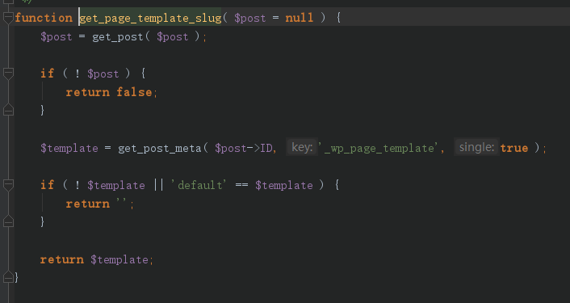

2月20号，RIPS团队在官网公开了一篇WordPress 5.0.0 Remote Code Execution，CVE编号CVE-2019-6977，文章中主要提到在author权限账号下，可以通过修改Post Meta变量覆盖、目录穿越写文件、模板包含3个漏洞构成一个RCE漏洞。
漏洞要求
- WordPress commit <= 43bdb0e193955145a5ab1137890bb798bce5f0d2 （WordPress 5.1-alpha-44280）
- 拥有一个author权限的账号
影响包括windows、linux、mac在内的服务端，后端图片处理库为gd/imagick都受到影响，只不过利用难度有所差异。
其中，官网上可以下载的5.0.0已经修复该漏洞。实际在WordPress 5.1-alpha-44280更新后未更新的4.9.9~5.0.0的WordPress都受到该漏洞影响。
漏洞分析
漏洞由三部分组成：
- PostMeta可以被覆盖。攻击者可以控制POST中meta_input字段的值，从而自由更改wp_postmeta表中的meta_key与meta_value的值。
- 更新附件时，攻击者可自由设置对应附件的_wp_attached_file的值，并结合裁剪功能实现目录穿越，从而将恶意图片保存到任意目录。
- 更新文章时，攻击者可以自由设置文章的_wp_page_template的值，并结合模板功能实现本地文件包含，从而最终造成代码执行。
postmeta变量覆盖
当我们修改图片信息的时候，会触发action=editpost调用wp-admin/includes/post.php下的edit_post方法
并且edit_post将$_POST值赋给$post_data
在377行我们可以看到$post_data的值被传入wp_update_post函数
跟进wp_update_post函数，在3817行发现当post_type为attachment时会调用wp_insert_attachment，并且会将参数$postarr传入赋值给$args，继续跟进，在5074行可以看到$args经过wp_parse_args处理后进入到了wp_insert_post函数
跟进wp_insert_post，在3600行可以看见$postarr[‘meta_input’]做了一个遍历，并且将键值带入update_post_meta函数
跟进update_post_meta，发现调用了update_metadata
继续跟进，可以看到函数对wp_postmeta表进行了更新
由于key、value可控，因此通过该函数，攻击者可以任意修改post_id对应的key、value值，也就是可以修改文件在数据库中存放的路径。
目录穿越
目录穿越是在变量覆盖基础上产生的。当我们对图片进行裁剪时，会调用wp_ajax_crop_image函数，并且会传入id和cropDetails参数，这两个值是可控的，随后这两值会被赋给wp_crop_image函数
跟进wp_crop_image函数，发现传入的src参数会被判断，然后带入get_attached_file函数
跟进get_attached_file函数，发现其会调用get_post_meta函数，即将wp_postmeta表里对应post_id字段meta_key值为_wp_attached_file的meta_value查询出来并返回给$src_file
当$src_file不存在时则调用_load_image_to_edit_path函数，跟进该函数，其会将进入elseif分支并调用wp_get_attachment_url函数
继续跟进，其将meta value查询出来并赋值给了$file，最后将其拼接成一个url返回，而从上面的分析可以知道meta value是我们可控的
得到结果后我们返回wp_crop_image函数继续跟进，发现src被传入了wp_get_image_editor函数
跟进wp_get_image_editor函数，发现其有一个选择图片处理方式的函数_wp_image_editor_choose
继续跟进，发现其提供了两种图片处理方式Imagick和GD，其中默认优先使用Imagick
而Imagick和GD对图片也有不同的处理：
- Imagick不会去除掉图片中的exif部分，所以我们可以将待执行payload代码加入到exif部分。
- GD不但会处理图片的exif部分，并且还会删除图片中出现的php代码。除非通过精心构造一张图片。
选择完图片处理方式之后，我们返回wp_crop_image函数继续跟进，可以看到两个函数，wp_mkdir_p和save，其中wp_mkdir_p是用来创建保存裁剪后图片的目录，save是用来保存图片。
跟进save函数，可以看到调用了make_image函数
跟进make_image函数，发现其使用call_user_func_array来调用Imagick的writeImage函数，而在linux环境下不支持不存在的目录跳转，借助多次上传裁剪即可绕过。比如说我的第一次上传的正常图片是timg.jpg，第二次恶意图片是poc.jpg，我就要用&meta_input[_wp_attached_file]=2019/04/timg.jpg#/../poc.jpg#/glarcy.jpg
这个payload来创建出poc.jpg#这个目录，这样第二次上传的payload就为2019/04/poc.jpg#/../../../../themes/twentynineteen/glarcy.jpg
文件包含
在template.php中，我们可以发现，当我们访问页面的时候，页面会通过访被问的页面属性，调用不同的模板加载函数，以下是可供加载的模板函数

在template-loader.php中，只有get_single_template、get_page_template这两个函数调用了get_page_template_slug函数，函数内容如下：
第一行获取请求的对象。当我们通过路由浏览文章时这里会返回WP_Post对象，其中包含文章的一些属性。
然后将该对象带入到了get_page_template_slug函数中，跟进该函数可以看到该函数根据post_id从wp_postmeta表中取出meta_key字段值为_wp_page_template的meta_value的值并返回。并且这里返回的meta_value的值同样是可以被攻击者自由覆盖的，因此该值是攻击者可控的。

然后将该值添加到$templates数组中并传递给get_query_template函数，通过跟进get_query_template函数追踪到locate_template函数，根据参数的传递，可以确定$template_names可控，通过前面的变量覆盖进行修改，这就导致了文件包含RCE
参考链接：